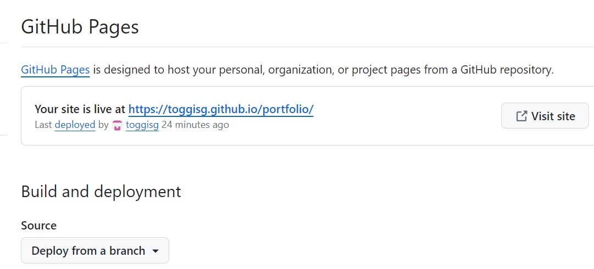

Hér er lýsing á hvernig verkefni 1 í VÉL604G var framkvæmt
Hvernig ég gerði mína vefsíðu
Áður enn ég byrjaði á vefsíðunni skoðaði ég myndband 1 og 2 frá Hafliða um verkefni 1 og notkun á Brackets. Úr þessum myndböndum fékk ég ágætis hugmynd um hvernig hægt væri að ná í html template og breyta því til þess að gera góða heimasíðu. Það template sem ég notaði náði ég í hér. Þetta template varð fyrir valinu vegna þess að ég fýlaði dökka þemað með hvítu stöfunum. Hér að neðan er hægt að sjá hvernig það template sem ég notaðist við leit fyrst út.
Það fyrsta sem ég breytti á síðunni var að eyða óþarfa flóknum hlutum út til einföldunar. Ég tók út óþarfa flipa sem myndu ekki gagnast mér í þessum áfanga eins og t.d. "Sign up flipann". Fliparnir voru nú þegar til staðar í mínu template-i svo ég þurfti einungis að breyta nafninu á þeim. Í flipunum efst er hægt að velja Heim, Verkefni eða Ferilskrá sem taka þig allir á mismunandi síður. Til þess að fliparnir gætu tekið mig á síðurnar fyrir verkefnin og ferilskránna tengdi ég þá við síður sér gerðar fyrir hverja skipun. Þessar síður litu eins út í upphafi og þurfti ég þá að breyta þeim eftir þörfum. Hér að neðan er kóðinn fyrir síðuhausinn með flipunum.
Mig langaði að það mikilvægasta væri aðgengilegt á forsíðunni sem er í þessu samhengi verkefnin og þess vegna er hægt að finna þau neðar á heimasíðunni.
Við innsetningu á myndum var notaður eftirfarandi kóði. Þar sem þessi kóði tekur inn jpg skrá úr images.
img src="images/blur.jpg"ss alt="" /
Til þess að stilla myndirnar af á síðunni notaði ég skipanirnar class="" og style"" og stærð myndanna ráðið með fjölda pixla í breidd og hæð eins og t.d:
class="image fit main"
style="float:right;width:450px;height:200px;"
Við vinnslu á síðunni minni notaði ég mér upplýsingar af þessari síðu til hliðsjónar. Þar sem ég fann hvernig ætti að gera allt sem ég bætti við eins og innsetningu á myndum, hlekkjum og breytingu á leturstærð.
Ég vildi hafa mismunandi útlit á verkefna og ferilskrá síðunni. Til þess að gera það notaði ég innbyggðu skrárnar "Left-sidebar" fyrir verkefnin og "No-sidebar" fyrir ferilskránna. Við gerð á ferilskránni ákvað ég að kóða hana inn í staðinn fyrir að hlaða upp jpg skrá vegna þess að það leit mun betur út. Á botni heimasíðunnar er Linkedin merkið sem fer með fólk á Linkedin vefinn minn. Það var nú þegar til á template-inu sem ég valdi mér.
Hvað vil ég fá út úr áfangaum
Námsefni áfangans hljómar mjög spennandi. Ég vil ná grunni í vefsíðugerð og skilningi á vefforritunartungumálum. Ég vil getað náð þeirri grunnþekkingu í vefforritun þannig að ég gæti nýtt mér það til framtíðar. Mér finnst mjög svalt að getað búið til vefsíðu sem inniheldur fyrri verkefni og feril.
Það sem mér finnst áhugaverðast við áfangann er að læra á fræsun og þrívíddar prentun. Ég er viss um að grunnþekking á þessu sviði komi mér að miklum notum í framtíðinni þrátt fyrir að ég sé ekki viss hvað það verður sem ég mun gera.
Fyrir lokaverkefni áfangans langar mig að gera eitthvað svalt sem ég gæti þrívíddarprentað. Það sem mér hefur dottið í hug hingað til er að hanna eitthvað á mig sem inniheldur einhverskonar mekaník. Ég hef hugsað að það væri fáránlega spennandi að hanna og gera úr sem gengur. Ég hef ekki mikla vitneskju á mekaníska hluta úra enn það er eitthvað sem ég er viljugur að grafa í og kynna mér fyrir lokaverkefnið.
Hvernig ég hlóð síðunni minni á GitHub
Til þess að hlaða síðunni minni á github byrjaði ég að horfa á myndbönd 3 og 4 frá Hafliða. Ég lenti fljótt í veseni með færa kóðann minn yfir á GitHub. Það var vegna þess að ég fattaði ekki að hlaða niður "Brackets Git" viðbótinni í Brackets. Ég bjó til aðgang á github.com og hlóð því niðiur í tölvuna mína. Til að ná betri tökum á git horfði ég á annað myndband og eftir að horfa á það var ég kominn með nægar upplýsingar til þess að klára að ná þessu á github.
Þegar ég hafði náð í GitHub og Brackets Git viðbótina var ekkert mál að fara í möppuna undir síðuna mína og velja "Open Git Bash here" og þá opnasðist eftirfarandi gluggi.
Til þess að hlaða inn .html skrám úr möppunni í git voru notaðar eftirfarandi skipanir í Git Bash:
$ git init
$ git add .
$ git commit -m "first commit" .
$ git remote add origin https://github.com/toggisg/portfolio.git
$ git push .
Þar sem git remote skipunin tengir möppuna mína við git repositoryið mitt sem ég gerði í gegnum GitHub aðganginn minn, toggisg. Og git push skipunin uppfærir síðuna mína fyrir nýlegum breytingum.
Þegar ég þarf að breyta eða uppfæra síðuna þarf ég að nota eftirfarandi skipanir til þess að fá breytinguna inn á github
$ git add.
og svo $ git commit -m "lýsandi titill á breytingu" og seinast $ git push og þá uppfærist síðan stuttu eftir.
Ég lenti í örlitlu veseni í seinustu skrefum í verkefnisins eða að ná opnum hlekk á vefslóð síðunnar minnar. Þá þurfti ég að ræða við Þorra Jökul félaga minn og hann benti mér á að fara í "pages" inn á Github.com og þar lá hlekkurinn fyrir síðuna mína. Hér er síðan hans Þorra fyrir áhugasama.
